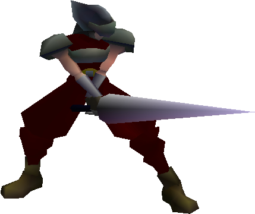
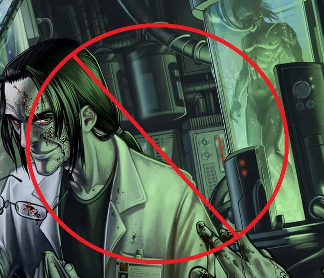

ShinRa Department of Scientific Research
Welcome to the Department of Scientific Research. We conduct experimental research to further the technology that ShinRa can utilize. Below are the primary tasks that we take part in.
Materia EngineeringMateria is a concentrated form of mako which allows the user to perform enhanced capabilities. Materia harnesses the power of the lifestream to manipulate nature and manifest itself as unique abilities. |
||
|  |
SOLDIER TreatmentSOLDIER is the elite unity from the ShinRa army. The top members of the infantry are recruited to undergo mako therapy. The mako energy enhances combat capability and allows them to excel at any task given. |
|
Absolutely No Human Genetics ExperimentationContrary to the rumors that the terrorist group AVALANCHE might spread, ShinRa performs no human experimentation. The lead scientist, Professor Hojo, follows all rules and regulations set forth by Midgar laws and our own personal standards set by the urban development department. |
 | |